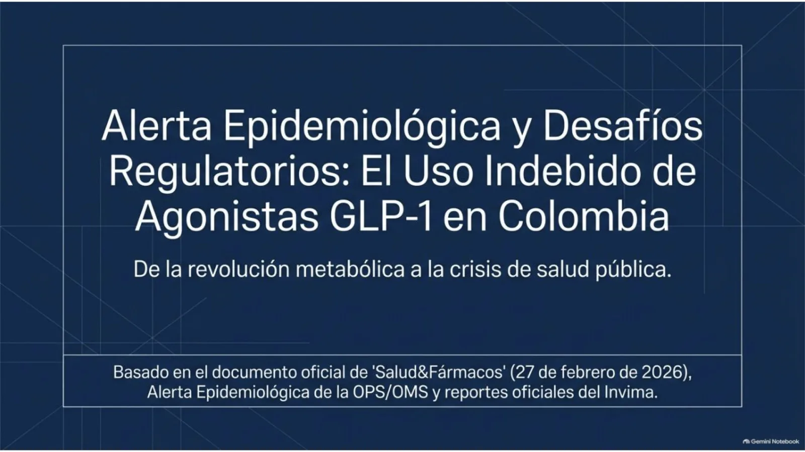
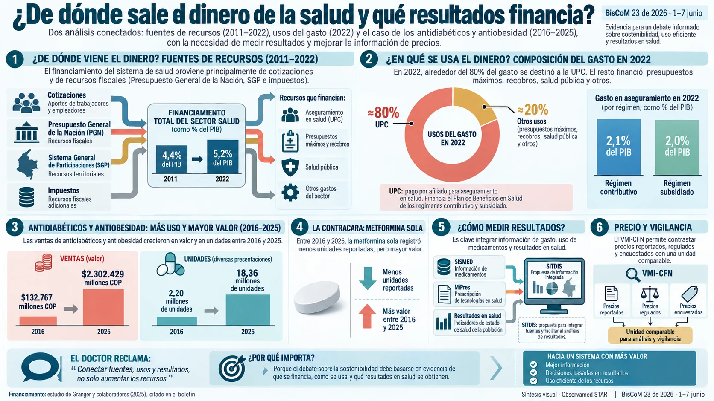
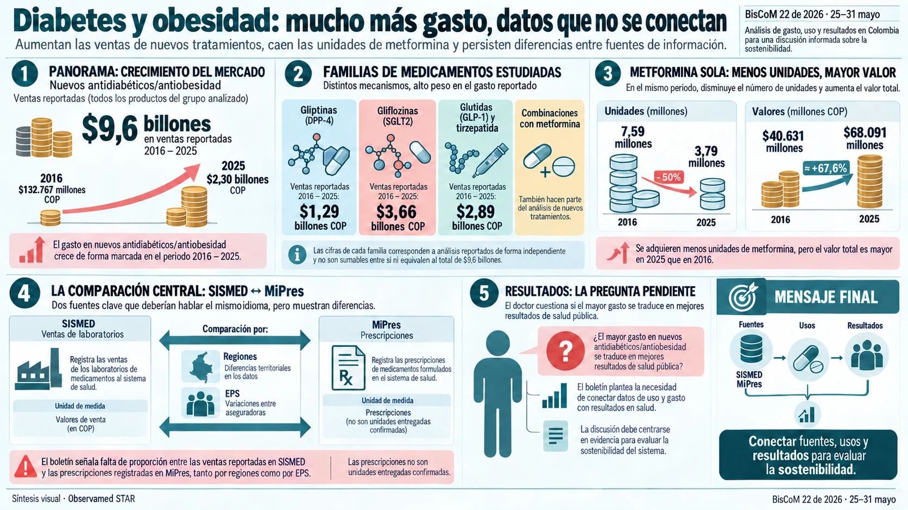
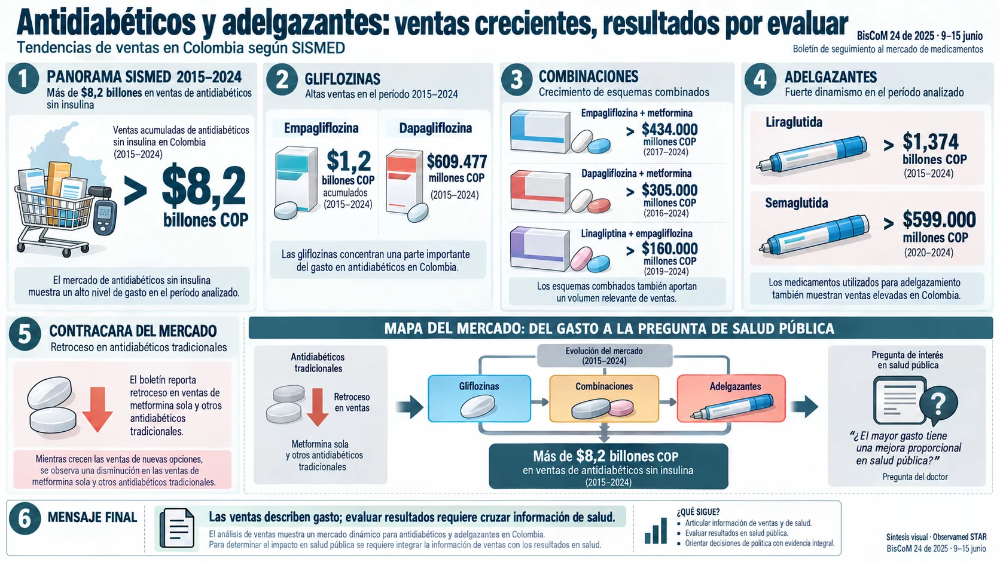

Temas · ASOPASIME
ASOPASIME: síndrome metabólico
Lo publicado sobre los medicamentos del síndrome metabólico: antidiabéticos, adelgazantes y agonistas GLP-1, con las cifras de ventas, precios y prescripciones.
Asociación de Pacientes con Síndrome MetabólicoFundación Observamed STAR
Lo más reciente · Análisis de la Fundación · Informe especial
Alerta epidemiológica: el uso indebido de los agonistas GLP-1 en Colombia
De la revolución metabólica a la crisis de salud pública: ventas en SISMED, prescripciones en MiPres y los riesgos del uso estético sin supervisión.
Leer →
01
Informe especial
El tema tratado a fondo.

02
Boletines BisCoM
Las ediciones sobre antidiabéticos y antiobesidad.

Antidiabéticos · BisCoM 23 de 2026Antidiabéticos y antiobesidad: resultados en salud pobres o discutiblesEl boletín pregunta si el crecimiento del gasto se traduce en mejores resultados en salud y examina las fuentes disponibles.
Antidiabéticos · BisCoM 22 de 2026Antidiabéticos y antiobesidad: gastos multimillonarios y sin controlVentas de antidiabéticos y tratamientos para la obesidad, evolución de la metformina y diferencias entre SISMED y MiPres.
Antidiabéticos · BisCoM 24 de 2025Antidiabéticos y adelgazantes: del éxito terapéutico al desastre económicoLa evolución de ventas de nuevos antidiabéticos y adelgazantes frente a la metformina, según los reportes a SISMED.03
Herramientas
Precios reales en la plataforma y los términos explicados.
Todo el material de esta página sale de los boletines BisCoM, los informes especiales y los análisis de la Fundación Observamed STAR, del Dr. Óscar Iván Andía Salazar.